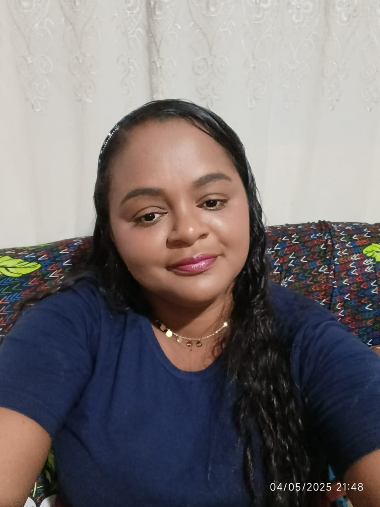

Olá, eu sou Conceição Absolon
Desenvolvedora em formação
Ver Meus ProjetosSobre Mim
Eu me chamo Conceição Absolon da Silva Filha de Raimundo Absolon da Silva e Antônia Pereira do Nascimento, tenho 33 anos e resido em Barro Duro –em um Povoado chamado Riacho Seco Piauí. Sou uma mulher dedicada, responsável e determinada, que busca constantemente crescimento pessoal, profissional e espiritual. Possuo ensino médio completo e atualmente estou cursando Tecnologia em Sistemas para Internet, com o objetivo de adquirir conhecimentos na área tecnológica e utilizá-los para melhorar a divulgação e o desenvolvimento do meu trabalho. Também estou em formação no curso de Administração pelo EJA TEC, ampliando minhas habilidades e minha visão profissional. Atuo como merendeira em uma escola pública, função que exerço com compromisso, carinho e dedicação, contribuindo para o bem-estar dos alunos por meio da alimentação. Além disso, também trabalho como confeiteira, área pela qual tenho grande paixão, pois envolve criatividade, cuidado e amor na produção de alimentos. Sou casada, mãe de uma filha, e valorizo muito minha família, que é minha base e maior fonte de motivação. Como cristã evangélica, tenho na fé um dos pilares da minha vida, o que me fortalece diante dos desafios do dia a dia. Sou uma pessoa que gosta de aprender coisas novas e estou sempre em busca de oportunidades de crescimento. Sempre que surgem cursos na minha cidade, procuro participar, pois acredito que o conhecimento é essencial para alcançar meus objetivos e melhorar de vida. Tenho afinidade com diversas áreas, mas me identifico especialmente com a culinária, onde consigo expressar minha dedicação e amor pelo que faço. Ao mesmo tempo, vejo na tecnologia uma grande oportunidade de evolução, principalmente para fortalecer meu negócio na confeitaria por meio da divulgação digital. Sou perseverante, esforçada e não desisto dos meus sonhos. Busco, a cada dia, evoluir e construir um futuro melhor para mim e minha família. 🎯 Objetivo Profissional Buscar crescimento profissional por meio da educação e da tecnologia, utilizando os conhecimentos adquiridos para melhorar minha atuação, especialmente no desenvolvimento e divulgação do meu trabalho na confeitaria. 💬 Frase de Destaque “Com Deus na frente, sigo firme na conquista dos meus sonhos.” ✨ 🧠 Formação Ensino Médio Completo Tecnologia em Sistemas para Internet (em andamento) Administração – EJA TEC (em andamento) Tenho vários cursos na área da confeitaria e de salgadinhos 💼 Experiências Merendeira em escola pública Confeiteira (produção de bolos, doces e salgados)
Meus Projetos

Contato
Vamos trabalhar juntos ou trocar uma ideia?